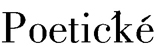

二弟览：
昨寄一信，想已达。
大打特打之盲诗人之著作[340]已到，今呈阅。虽略露骨，但似尚佳，我尚未及细看也。如此著作，我亦不觉其危险之至，何至于兴师动众而驱逐之乎。我或将来译之，亦未可定。
捷克文有数个原字（大约近似俄文）如此译法，不知好否？汝或能有助言也。
Narodni Listy都市新闻

besedy诗座Vaclav z Michalovic书名，但不知z作何解。
兄树上 八月卅日
注 释
[340] 盲诗人之著作 指爱罗先珂的童话集《天明前的歌》。爱罗先珂于1921年第二次去日本，5月底被日本政府驱逐出境时曾遭到野蛮的殴打。后来鲁迅陆续从《天明前的歌》中译出《狭的笼》、《鱼的悲哀》、《池边》、《雕的心》、《春夜的梦》、《古怪的猫》等六篇。